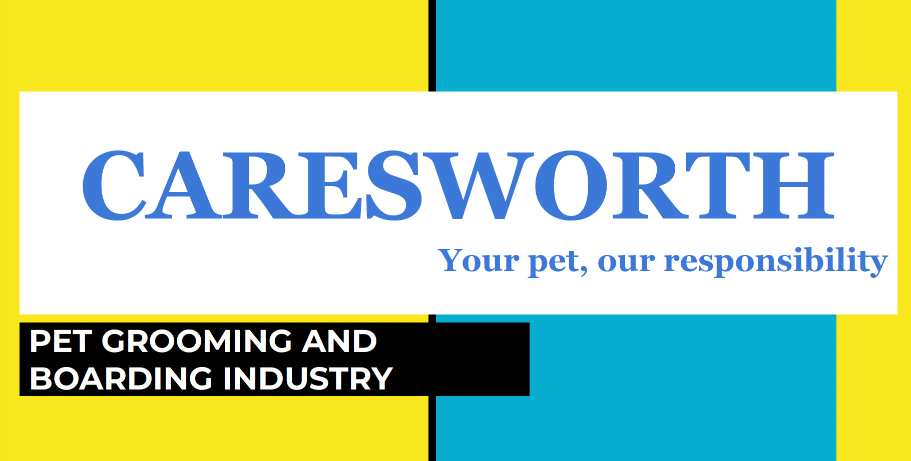

Academic project archive
CaresWorth
A research-backed pet care business plan.
Market research · Data analysis · Strategic planning

CaresWorth is poised to enter the thriving pet grooming and boarding industry in Edmonton, Alberta. With the industry expected to expand at an annualized rate of 1.3% through 2024, contributing increasingly to the Canadian economy at a rate of 2.8% annually, and industry revenue forecasted to grow at a robust 4.2% annually, the opportunity for market entry is both timely and promising. Despite these favorable conditions, the low entry barriers pose a significant threat of competition, challenging our potential for success. To navigate this, CaresWorth is committed to distinguishing itself through superior service quality and unparalleled convenience for our consumers.
Our strategic focus is on serving the working population of Windermere, particularly individuals aged 30 to 49. This demographic represents the industry's most lucrative segment, promising long-term profitability for our venture. The absence of comparable pet services in Windermere positions CaresWorth to meet a critical market need, offering busy pet owners a trusted solution for their pets' care, including specialized exercises and massages designed for their pets' well-being.
However, the industry's entry and operational demands require significant capital investment, particularly to comply with the stringent standards set by the board of kennel operators. Success in this service-driven sector hinges on the excellence of our team. Therefore, attracting skilled and experienced employees is paramount, albeit increasing our cost base due to the necessity of offering competitive wages. These factors may impact our profit margins and the timeline to achieve break-even. To mitigate these challenges, CaresWorth plans to implement strategic cost management and innovative service offerings to ensure financial sustainability and market differentiation.
By emphasizing these strategic initiatives, CaresWorth is not merely entering the market; we are setting a new standard for pet care excellence and customer convenience, poised for long-term success in a competitive landscape.